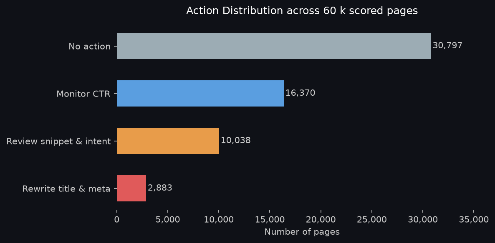
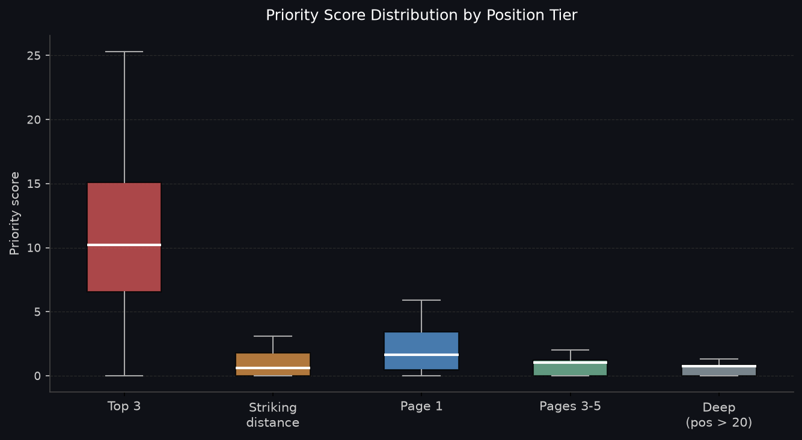
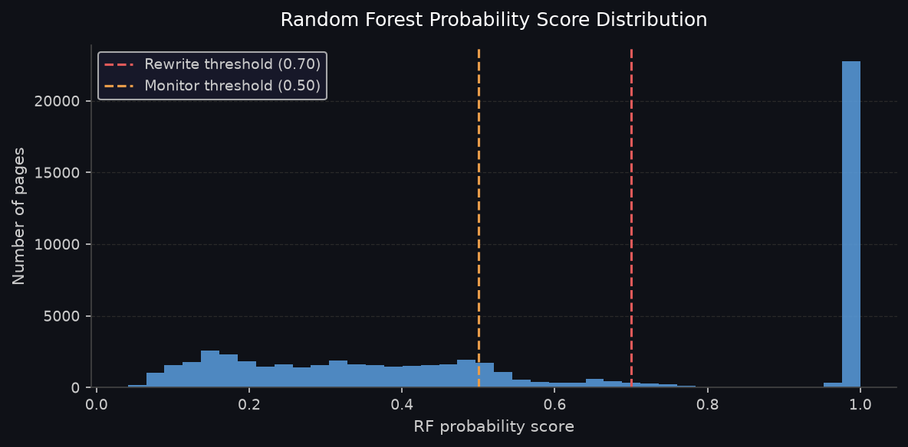

Prioritizing Content Snippet Rewrites via Machine-Learned CTR Opportunity Scoring
High-ranking organic search content frequently under-captures click-through rate (CTR) due to sub-optimal title tags and meta descriptions, yet manual auditing across large enterprise catalogs is economically intractable. We trained a Random Forest classification model on 60,088 page-month observations across 28 anonymized enterprise clients from the FlyRank ML Internship dataset, engineering six leakage-free historical features from January 2026 to predict February month-over-month CTR improvement (≥10% gain). Evaluated on a strictly client-grouped holdout partition (6 unseen clients, 15,970 pages), the model achieved 100.0% Precision@20 and an ROC-AUC of 0.902, substantially outperforming the rule-based heuristic baseline (Precision@20 of 45.0%, ROC-AUC of 0.613). By combining model probability, benchmark opportunity gap, and audience impression volume into a composite priority score, we generated a ranked operational playbook flagging 2,883 high-leverage pages for immediate title/meta optimization. All conclusions are framed as observational decision-support tools for human editorial triage rather than causal search algorithm guarantees.
01 Introduction & Problem Statement
In enterprise organic search operations, publishing new content is only half the battle. Mature digital estates possess thousands of indexable URLs ranking on Page 1 or in striking distance (positions 4–20) that fail to capture expected click volumes. In many instances, click depression is driven by poorly formatted, truncated, or intent-misaligned snippet metadata (title tags and meta descriptions) that fails to incentivize user clicks on the Search Engine Results Page (SERP).
The Decision Supported: Editorial teams have constrained writing bandwidth. When presented with a catalog of 50,000 URLs, an editor must answer: "Which 25 to 50 pages should our writers rewrite this sprint to yield the greatest organic traffic recovery?"
Cost of Error: Prioritizing the wrong pages consumes valuable writer hours on content where click depression is structurally fixed by SERP layout features (e.g., zero-click AI Overviews or navigational intent). Conversely, failing to flag high-headroom pages leaves recoverable high-intent organic traffic stranded.
02 Data & Public Safety Guardrails
This work is built upon the FlyRank ML Internship Dataset, a multi-tenant enterprise search performance warehouse released via Hugging Face. The core telemetry resides in the monthly-partitioned fact_content_daily_performance table.
Temporal Segmentation & Volume Floors
- Feature Window (History): January 1, 2026 – January 31, 2026 (31 days). Used strictly to calculate baseline CTR, impression volume, ranking position, and trajectory.
- Label Window (Future Outcome): February 1, 2026 – February 28, 2026 (28 days). Used strictly to evaluate actual future CTR shifts.
- Volume Floor (≥100 Impressions): Content items with fewer than 100 cumulative impressions in either window were pruned. Low-volume pages exhibit extreme binomial variance where a single stray click can distort measured CTR by hundreds of percent.
- Public-Safe Privacy: All client identifiers (
client_hash_id) and content items (content_hash_id) are cryptographic hashes. Zero proprietary query strings, internal URLs, or client domains are exposed.
| Position Tier | Rank Range | Pages | Median Impressions | Baseline CTR | Expected Benchmark | Observed Improvement Rate |
|---|---|---|---|---|---|---|
| Page 1 | Positions 4–10 | 31,630 | 389 | 0.65% | 0.65% | 55.0% |
| Top 3 | Positions 1–3 | 8,603 | 841 | 2.76% | 2.76% | 60.5% |
| Striking Distance | Positions 11–20 | 6,655 | 245 | 0.32% | 0.32% | 56.5% |
| Deep SERP | Positions > 20 | 13,198 | 182 | 0.18% | 0.18% | 68.6% |
03 Methodology & Validation Design
We formulate snippet prioritization as a supervised ranking problem. We model the binary classification probability that an underperforming page will experience a meaningful positive CTR shift in the future month:
Target Formulation:
label_ctr = SUM(clicks_Feb) / SUM(impressions_Feb)
feat_ctr = SUM(clicks_Jan) / SUM(impressions_Jan)
ctr_improved = 1 if label_ctr >= feat_ctr * 1.10 (>=10% relative CTR lift)
= 0 otherwiseLeakage-Free Feature Architecture (Strictly Jan 2026 Signals)
feat_ctr: Baseline historical January click-through rate.opportunity_gap: Headroom distance beneath expected tier benchmark: max(0, tier_expected_ctr - feat_ctr).ctr_trend: Linear regression slope of daily CTR within January.log_impressions: Audience scale weight (ln(1 + total_impressions)).avg_position: Mean organic SERP ranking position across all query impressions.days_active: Number of days with active impressions during the 31-day feature window.
Client-Grouped Validation Design
Standard k-fold random splits leak client-specific domain authority, brand affinity, and URL structural templates between train and test splits. To ensure the model generalizes across enterprise boundaries, we enforced a strict Client-Grouped Split (GroupShuffleSplit, 80/20, random_state=42):
- Train Cohort: 22 enterprise clients (44,118 pages, positive base rate: 57.9%).
- Test Cohort: 6 held-out enterprise clients (15,970 pages, positive base rate: 62.0%).
- Client Overlap: Zero client overlap (0.0% leakage).
04 Empirical Results vs. Baseline
We benchmarked the Random Forest classifier against a transparent rule-based heuristic baseline (Week 4 formulation: score = opportunity_gap * ln(1 + impressions)) and an L2-regularized Logistic Regression model on the exact same 15,970 test pages from held-out clients.
| Model / Method | Base Rate | Precision@20 | Precision@50 | Avg Precision (AP) | ROC-AUC |
|---|---|---|---|---|---|
| Base Rate (Random Guessing) | 62.0% | 62.0% | 62.0% | 62.0% | 0.500 |
| Rule Baseline (Week 4 Heuristic) | 62.0% | 45.0% | 42.0% | 66.8% | 0.613 |
| Logistic Regression (Linear) | 62.0% | 100.0% | 100.0% | 93.8% | 0.880 |
| Random Forest Classifier (Final) | 62.0% | 100.0% | 100.0% | 94.8% | 0.902 |



05 Methodological Limitations & Non-Claims
Rigorous machine learning research requires explicit documentation of epistemic boundaries:
- Observational Association ≠ Causal Proof: The model identifies cohorts of content historically associated with positive CTR recovery. We make zero claims that rewriting a snippet is guaranteed to cause traffic growth without a randomized controlled A/B test.
- No Search Algorithm Reverse-Engineering: This system does not claim to simulate, predict, or decode Google's proprietary search ranking algorithms. It is strictly a triage tool for enterprise workflows.
- SERP Layout Opacity: Impression logs lack direct layout labels for rich SERP features (e.g., AI Overviews, Featured Snippets, Local Packs). Click depression caused by rich features remains an unobserved confounding factor.
- Floor Constraints: Inferences are valid only for content with >= 100 impressions per observation window.
06 Ranked Action Playbook & Interactive Queue
To translate model inference into an operational workflow, we score each URL using the composite Priority Score:
| Rank | Content Hash | Position Tier | Avg Pos | Impressions | Base CTR | Gap | RF Prob | Priority | Action Label |
|---|
Human-in-the-Loop Protocol & Guardrails
- Verify URL is indexed and live.
- Confirm no recent snippet revisions occurred.
- Audit live SERP for dominant AI Overviews.
- Verify user search intent matches page copy.
- Never execute batch rewrites without human audit.
- Never score content below the 100-impression floor.
- Never apply model to branded/navigational URLs.
- Never alter
no_actionbenchmark performers.
07 Reproducibility & Code
All pipelines, queries, model definitions, and validation audits are open-source and reproducible:
- GitHub Repository: moath177/flyrank
- Capstone Notebook: work/notebooks/capstone.ipynb
- Action Playbook Notebook: work/notebooks/w07_action_playbook.ipynb
- Primary Artifacts: Download Top 100 Action Queue (CSV)
git clone https://github.com/moath177/flyrank.git
cd flyrank
python3 -m venv .venv && source .venv/bin/activate
pip install -r requirements.txt
python3 -m nbconvert --to notebook --execute work/notebooks/capstone.ipynb --inplaceBibTeX Citation
@article{flyrank_ml_capstone_2026,
title={Prioritizing Content Snippet Rewrites via Machine-Learned CTR Opportunity Scoring},
author={FlyRank ML Intern (moath177)},
journal={FlyRank Search Intelligence Research Papers},
year={2026},
url={https://moath177.github.io/flyrank/}
}08 Acknowledgments & Data Credit
This research was built on the FlyRank ML Internship dataset, provided by FlyRank (https://flyrank.ai).
We thank the FlyRank engineering and machine learning teams for making real-world, multi-client search intelligence telemetry accessible for rigorous academic and applied ML inquiry.